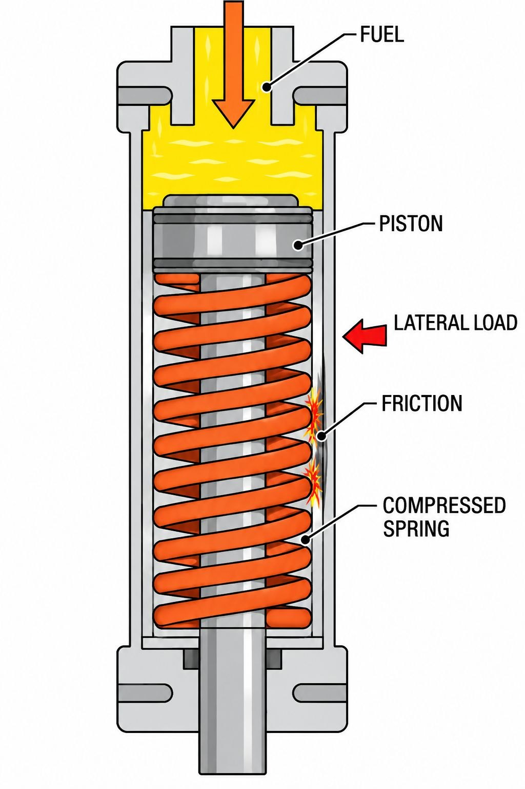
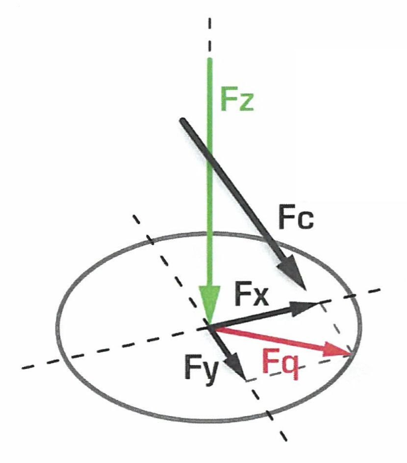
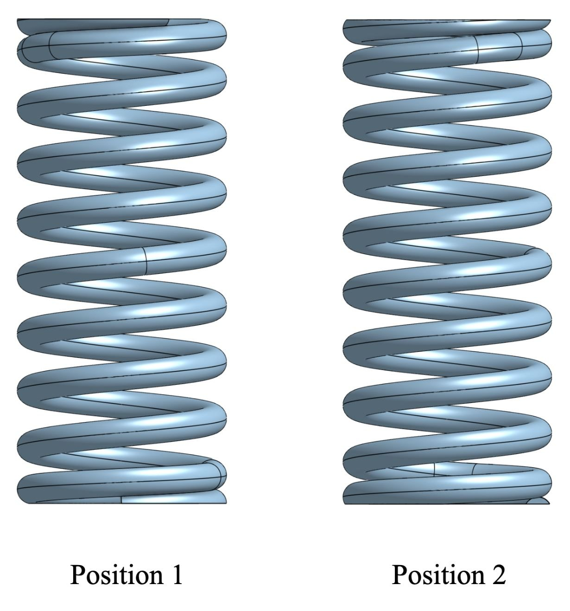
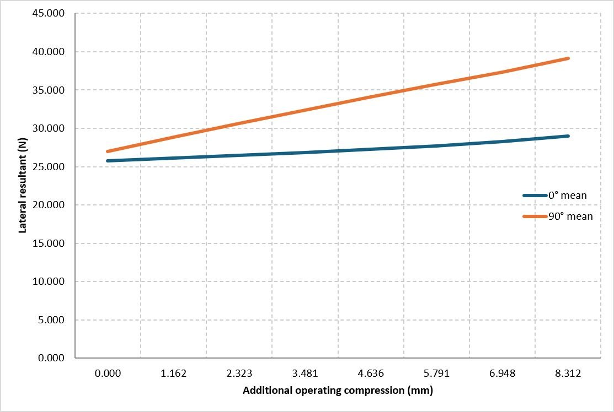
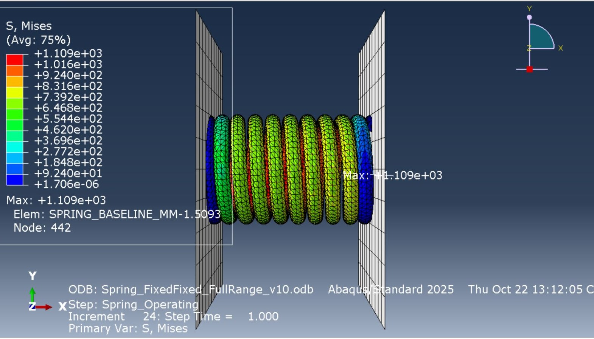
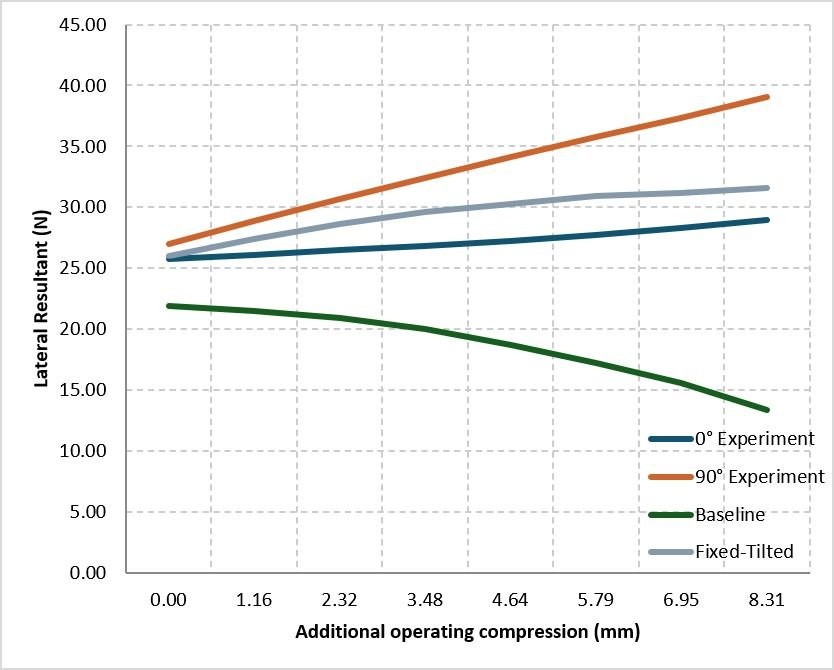
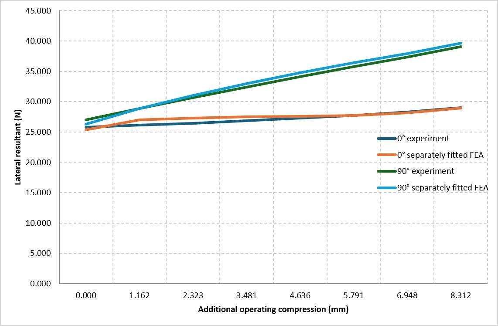
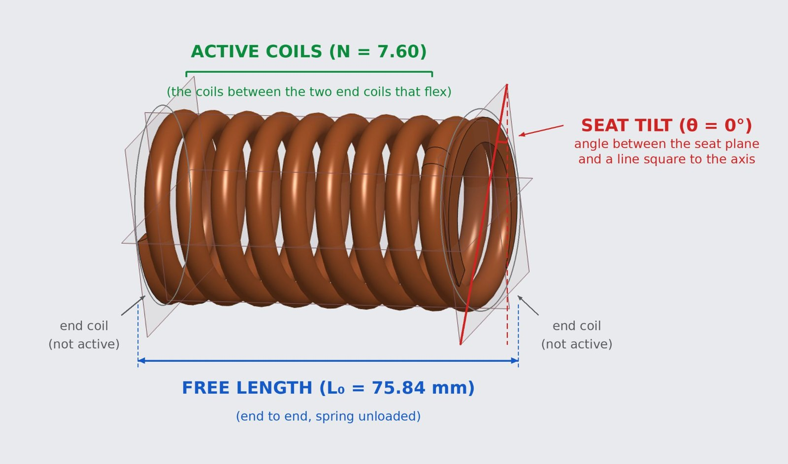
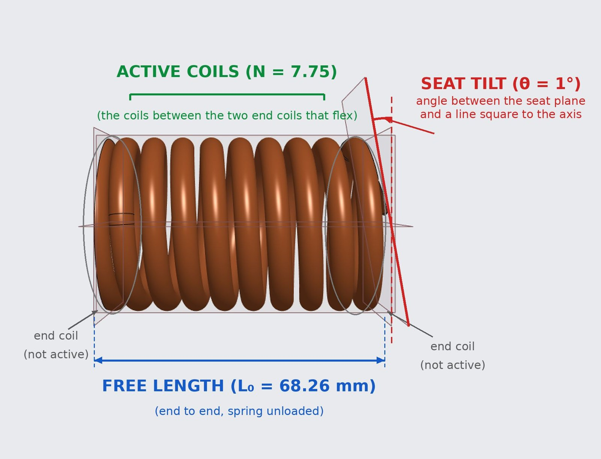

Project 02 — Simulation & Testing
Reducing Lateral Forces in Helical Compression Springs
Springs in Woodward's aircraft fuel-metering systems don't push perfectly straight. Our senior design team is finding out why, and how to design springs that push straighter, by combining physical testing, nonlinear Abaqus FEA and a parametric CAD design of experiments.
- Sponsor
- Woodward Inc.
- Course
- ME 470 · Senior Design
- Team
- 4 students
- Date
- Aug 2026 – Present
- Tools
- Abaqus, parametric CAD, DOE, physical testing

The Problem
When the spring compresses, it also produces a sideways force (Fq) and an overturning moment (Mq). These push the spring against the valve walls, creating friction that lowers system efficiency and hurts valve performance.
Our earlier research pointed to spring geometry and end conditions as the main influences, so we focused on three variables: the number of active coils, free length and seat tilt.


Physical Testing
We set up the test protocol to match the spring's real working conditions, on an EasyDur universal tension and compression testing machine.
- Load range
- 85 – 120.9 lbf (378 – 538 N)
- Compression
- 0 – 8.312 mm
- Tests
- 20: 10 springs × 2 positions
- Positions
- 0° and 90° (spring rotated)


What we measured
- Lateral load rose by +3.2 N at 0° but +12.1 N at 90° across the operating range
- Average standard deviation: 2.2 N at 0° and 4.2 N at 90°
What surprised us
- Rotating the spring 90° should rotate the force by 90°, but it stayed at about 20° in both positions
- That points to a contribution from the test machine or seating that stays fixed while the spring's own force rotates
Finite Element Model

We built a nonlinear Abaqus model using the sponsor's material properties and two compression steps. It matched the axial behavior closely but not the sideways behavior.
- Axial stiffness
- 19.02 N/mm, ≈1% from nominal
- Axial force
- Within ≈4.2% of test data
- Lateral trend
- −8.6 N in FEA vs. +3.2 / +12.1 N measured
To close the gap, we tested seven contact and boundary-condition setups. Simplified end constraints, like free end tilt and prescribed end rotation, solved successfully. More realistic seat-contact setups (frictionless, finite-friction and rough contact) didn't converge.


Applying a gradually increasing tilt at the spring seat let us calibrate the model to the tests within 0.54 N RMSE at 0° and 0.57 N at 90°. The catch: the model calibrated at 0° doesn't predict the 90° result. That tells us the calibration captures the test setup rather than the spring alone, so the model isn't predictive yet.
Parametric CAD & Design of Experiments


A parametric CAD workflow generates each spring variant and exports it automatically as a .stp file for simulation. The design of experiments varies:
- Active coils: 7.00, 7.25, 7.50 and 7.75
- Free length: ±5% and ±10% from baseline
- Seat tilt: 1° and 2°
- Next to add: helix angle, and circular vs. elliptical wire cross-sections
Where It Stands
Lateral force
Rotating the spring changes how large the lateral force is, but its direction stays about the same.
Calibration
Prescribed rotations match the measured forces closely, but the models don't yet predict across orientations.
Next steps
Resolve the seating and test-machine effects, establish consistent model correlation, then screen spring geometries.
Team of 4. Sponsored by Woodward Inc. Project in progress; results from the October 2026 mid-semester review.